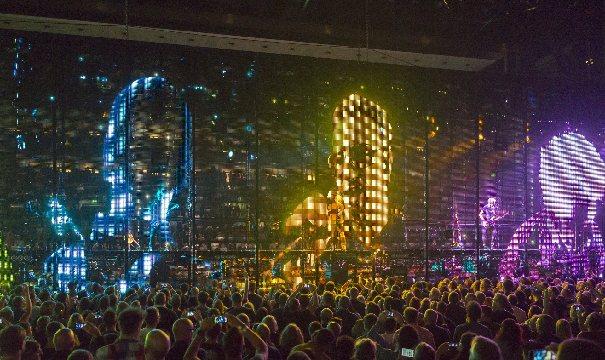
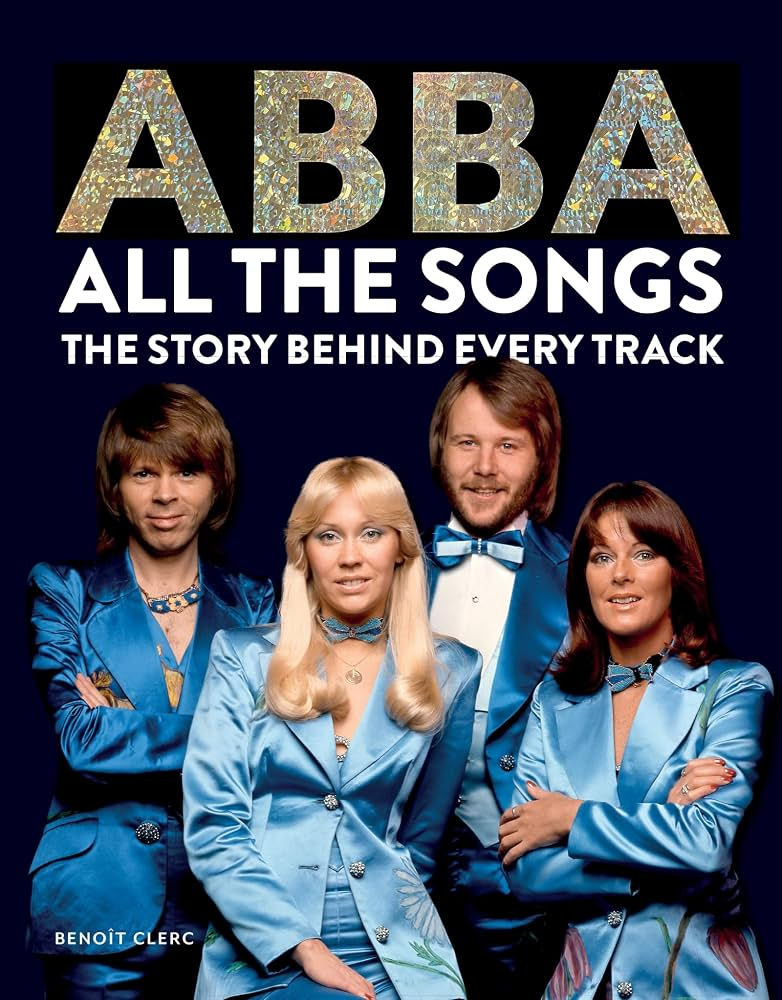

Irlande • 1976
U2
Le rock irlandais intemporel porté par des hymnes de stade légendaires.


THE SOUND OF LEGENDS
Découvrez les artistes qui ont marqué l'histoire de la musique
Explorer les artistesLe rock irlandais intemporel porté par des hymnes de stade légendaires.
Les géants légendaires de la pop suédoise aux tubes planétaires intemporels.